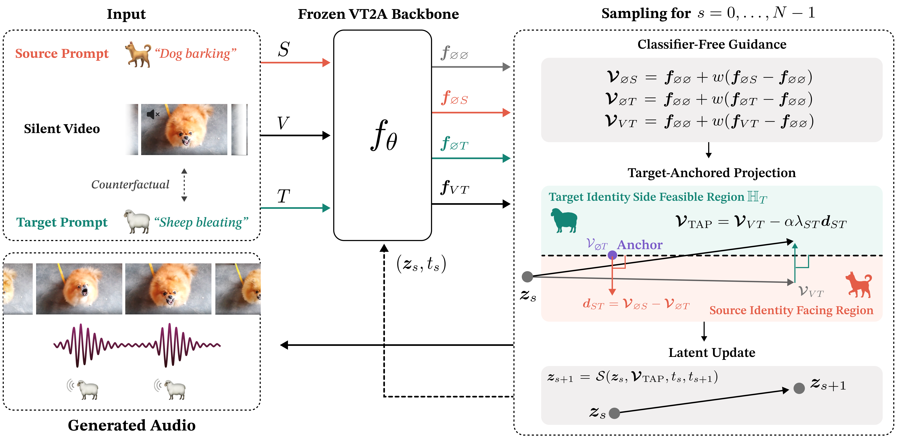

ICLR 2027 · Anonymous submission
TAP-FoleyInference-Time Target-Anchored Projection
for Counterfactual Video Foley Generation
Change the sound identity. Preserve the timing.
1,189 videos · One source and 10 targets per video
Download the manifest: CSV JSONL
Abstract
Counterfactual Video Foley Generation replaces the source sound identity that a silent video implies with the target sound identity that a text prompt describes, while preserving the timing of visible events. Video-text-to-audio (VT2A) models struggle with this task because video conditioning carries not only the timing but also the source identity, which conflicts with the target prompt. Existing training-based methods suppress the source identity by adding a visual adapter or by training on visual–text conflicts, yet it remains partially audible. Inference-time guidance methods suppress it more fully, by negative source prompting with a fixed weight or by dropping video conditioning at an intermediate step, yet both degrade temporal alignment. We propose TAP-Foley, an inference-time guidance method that adaptively suppresses the source identity while retaining video conditioning throughout generation. At each step, it measures how strongly the video steers the prediction toward the source identity beyond what the target prompt alone would produce. It removes this excess along a single source–target axis with a scaled closed-form projection onto a novel target-anchored constraint. To reliably evaluate sound identity replacement and temporal alignment, we introduce VGGSound-Counterfactual, a benchmark for Counterfactual Video Foley Generation. Comprehensive experiments on two VT2A backbones show that TAP-Foley achieves a more favorable trade-off between sound identity replacement and temporal alignment than the evaluated configurations of prior methods. At matched replacement, it improves temporal alignment by 19% and 20% over the strongest prior inference-time guidance method. Code, benchmark, and demos are available at https://anonymous129108.github.io/TAP-Foley/.
Method overview

See the action. Hear the target.
Compare both TAP-Foley backbones with six baselines on the same video and target prompt.
Use headphones. Play a video to listen; other players pause automatically. Clips show the same opening segment, up to 8 seconds.
Baselines
Same input video · Same target promptTAP-Foley (Ours) uses constant α = 1.2 on both MMAudio and Omni2Sound. Direct uses video + target prompt. VGGSound contains the examples used in our user study; Greatest Hits contains additional examples originally prepared for the study but excluded from the final survey. These curated examples illustrate individual outputs.
Loading examples…